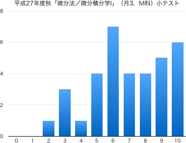
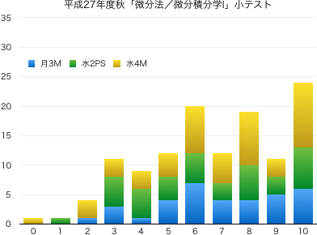
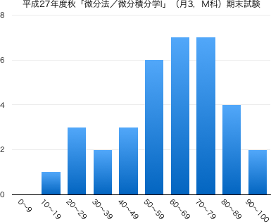
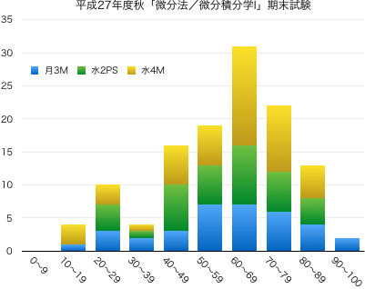

連絡事項
- 2/3：期末試験の結果を公開しました．
- 1/19：1月18日の授業は大雪の影響で休講となりました．代替措置についてはツイッターを参照してください．
- 11/26：第8回に実施した小テストの結果を公開しました．
-
Twitter #15FdcM を参照してください．
-
9/24：このページを公開しました．
授業の目的
自然科学のみならず工学のさまざまな分野で、現象を表現・解析する手段として微分積分学の知識は欠かせない。
微分積分学の概念・計算技法を身につけるために、1変数関数を対象とした微分法について学習する。基礎的な計算技法に習熟するとともに、極限や極値に関する理論も習得する。
達成目標
- 関数の極限を求めることができる。
- 初等関数の導関数を求めることができる。
- 極値の意味を理解し、それを利用して曲線の概形を描くことができる。
- 不定形の極限を求めることができる。
- 高次導関数を求めることができる。
- テイラーの定理を理解し、テイラー展開を利用した近似式を求めることができる。
科目の位置づけ
-
微分積分学I（1変数関数の微分）→ 微分積分学II（1変数関数の積分）→ 微分積分学III（多変数関数の微積分）
-
この科目と「微分積分学II」を併せて履修することにより、微分積分学の基礎知識を習得することができる。
これまでの授業と今後の予定
| 第1回 |
9月 |
28日（月） |
ガイダンス |
| 第2回 |
10月 |
5日（月） |
関数の極限 第1章 §1.1 第2章 §1.1 （板書画像 1 2 3 4 5 6 7 8 9 10 11 12 13） |
| 第3回 |
|
12日（月） |
関数の連続性 第2章 §1.2 , 微分係数 第1章 §1.2 |
| 第4回 |
|
19日（月） |
導関数 第2章 §2.1 |
|
|
23日（金） |
（特別研修日） |
| 第5回 |
|
26日（月） |
積と商の微分法 第2章 §2.1 |
| 第6回 |
11月 |
9日（月） |
合成関数の微分法 第2章 §2.2 |
| 第7回 |
|
16日（月） |
三角関数の微分 第2章 §3.1, 3.2, 3.3 |
| 第8回 |
|
26日（木） |
小テスト（問題 | 解答 | 得点分布）
|
| 第9回 |
|
30日（月） |
逆三角関数 第2章 §4.1, 4.2 |
| 第10回 |
12月 |
7日（月） |
逆三角関数の導関数 第2章 §4.1, 4.3 |
| 第11回 |
|
14日（月） |
対数関数・指数関数の導関数 第2章 §5.1, 5.2, 5.3 |
| 第12回 |
|
21日（月） |
対数微分法 第2章 §5.4 ，微分法の応用 (1) 接線 第3章 §1.1 |
|
|
23日（水） |
（補講日） |
| 第13回 |
1月 |
7日（木） |
微分法の応用 (2) 関数の増減 第3章 §2.3 ，(3) 極大と極小 第3章 §3.1 |
| 第14回 |
|
18日（月） |
微分法の応用 (4) 関数の凹凸 第3章 §3.4 ，(5) テイラー展開 第6章 §2.1, 2.2, 2.3 |
|
|
25日（月） |
期末試験（問題 | 解答 | 得点分布） （3限 12:40--13:40） |
教科書・参考文献について
- 矢野健太郎・石原繁編 『微分積分』 裳華房 » リンク
評価について
- 期末試験80%，小テスト・演習課題など20%の割合で評価する．
- 毎回の授業で問題演習を実施する．
- 教科書等の問題を指定し，指定の答案用紙に解答して提出してもらいます．
- 解答後は必ず答え合わせをして，正しくない場合は途中式のどこが間違えているか探して訂正してもらいます（正答をただ書き写すことではない）．
- 授業時間内に終わらない場合は，次回の授業の前々日（ただし土日を除く）の17:00までに私に直接手渡すか，研究室のドアの封筒に提出してもらいます．提出期限が過ぎた答案は一切受け取りません．
- 1回の提出につき1点を加点します（合計点数は最大10点）．
ただし，不完全な答案（解答されていない問題がある，答え合わせをしていない，誤答が正されていない，等々の不備）は加点しません．
- 中間期に小テストを実施する（10点）．
- 期末試験を実施する（100点満点）．
- $\min\{10,$(課題提出回数)$\times 1\}+$(中間小テストの点数)$+$(期末試験の点数)$\times 0.8\geqq 60$ で合格とする．
その他
- 授業の欠席について
- 出席点というものがないので，休んだことの届け出は基本的にしなくて結構です．友人にノートを写させてもらうなどの対処を各自行ってください（課題の有無も確認してください）．
- 休んだ回の課題を提出する意思があるならば，メール等で連絡の上，答案用紙を受け取りに来てください（またはここからダウンロードして印刷）．レポート用紙やルーズリーフでの提出は原則不可です．
- 病欠等で数日休んでしまった場合は，課題の提出期限を猶予します．その際は，答案用紙を受け取る際に欠席届け等を見せてください．
- スチューデントアワー (SH) は月火水木の昼休みです．
- 授業に対する基本的な考え方に目を通しておいてください．
試験の得点分布と評価など
- 小テスト：問題と解答（平均点 6.91点）
 
- 期末試験：問題と解答（平均点 58.4点）
 
- 成績結果
| 履修者 | 35 |
| 受験者 | 35 |
| AA | 2 |
| A | 4 |
| B | 6 |
| C | 11 |
| D | 12 |
| 未受験 | 0 |
| 単位修得者 | 23 |
| 単位修得率 | 65.7% |
{kind=link}
{kind=link}
{kind=link}
{kind=link}
{kind=link}
{kind=link}
{kind=link}
{kind=link}
{kind=link}
{kind=link}
{kind=link}
{kind=link}
{kind=link}